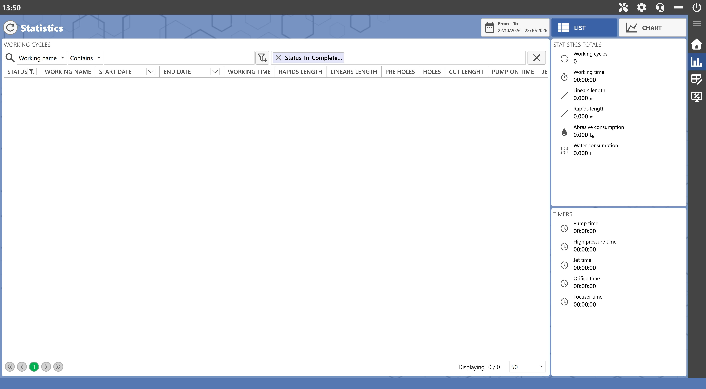
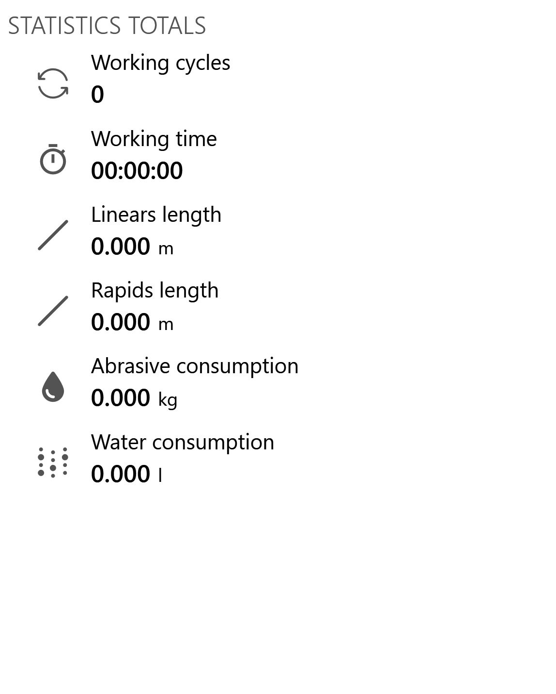

Tramite questa finestra è possibile visualizzare le statistiche delle lavorazioni eseguite dalla macchina.

Barra superiore
Aggiorna statistiche | |
 | Filtro date |
Lista | |
Grafico |
Filtro data
Questo filtro permette di limitare nel tempo la raccolta delle statistiche.
Una volta cliccato il pulsante per filtrare le date, verrà aperto il seguente pannello che permette di modificare la data di inizio, quella di fine, oppure di impostare uno dei filtri temporali collocati sul lato sinistro del pannello:

Statistiche Lista
La visualizzazione in lista permette all’operatore di ordinare e filtrare le statistiche tramite i campi a disposizione visualizzati nella seguente immagine di esempio:

Statistiche Grafico
La visualizzazione a grafico permette all’operatore di visualizzare le statistiche disposte nel tempo e limitatamente alla categoria attualmente selezionata.

Categorie
Di seguito sono riportate le categoria standard disponibili nelle statistiche disposte a grafico:
Totale cicli | |
Lunghezza lineari | |
Tempo di lavoro | |
Lunghezza rapidi | |
Abrasivo consumato | |
Acqua consumata |
Totali statistiche
Questo riquadro è collocato nella parte superiore destra dell’interfaccia e mette a disposizione dell’operatore i valori totali delle statistiche per categoria.

Timers
Questo riquadro è collocato nella parte inferiore destra dell’interfaccia e mette a disposizione dell’operatore il riassunto di alcune tempistiche: